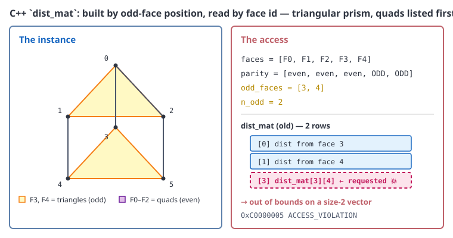
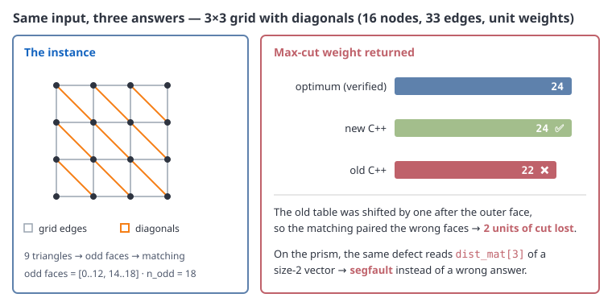
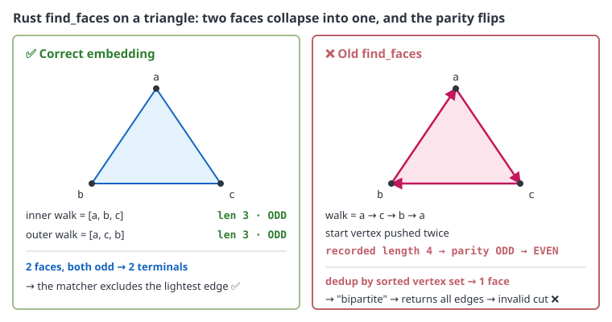

layout: true class: typo, typo-selection --- count: false class: nord-dark, middle, center # ⚡ Making Hadlock's MAX-CUT Fast ## A 92% matching bottleneck, a silent C++ bug, and a Rust prototype reborn ### 🐍 → ⚙️ → 🦀 @luk036 👨💻 · 2026 📅 --- ### 📋 Agenda .pull-left[ **Part 1 — The Setup** 🧭 - Hadlock in 60 seconds - The reduction to matching - How we measure 📏 **Part 2 — Python: Where the Time Goes** 🐍 - The profile surprise 🔍 - 92% is one call - The "obvious" fix that wasn't 🙃 ] .pull-right[ **Part 3 — C++: A Bug Behind the Speedup** ⚙️ - Same blossom, 246× faster 🚀 - A silent out-of-bounds 🐛 - Six fixes, 108/108 ✅ **Part 4 — Rust: Prototype → Working** 🦀 - An exponential matcher 💥 - Faces that were never faces 🎭 - Real planarity + embedding 🗺️ **Part 5 — Lessons** 🎓 ] --- class: nord-light, middle, center ## 🧭 Part 1 — The Setup --- ### 🪓 Hadlock in 60 Seconds **Planar MAX-CUT is polynomial** — reduce it to a matching problem on the planar **dual**. 🪄 .mermaid[ <pre> graph LR G["Primal graph\nG = (V, E)"] --> EMB["Planar\nembedding"] EMB --> FACES["Faces\n(inner + outer)"] FACES --> DUAL["Dual graph\nG*"] DUAL --> ODD["Odd faces\n|f| odd → T"] ODD --> MWPM["Min-weight perfect\nmatching on T"] MWPM --> EXCL["Excluded\nprimal edges"] EXCL --> CUT["Max cut\nE \ excluded"] style G fill:#e3f2fd,stroke:#1565c0,stroke-width:3px style FACES fill:#d1c4e9,stroke:#6a1b9a,stroke-width:3px style DUAL fill:#d1c4e9,stroke:#6a1b9a,stroke-width:3px style ODD fill:#fff9c4,stroke:#f57f17,stroke-width:3px style MWPM fill:#f8bbd0,stroke:#c2185b,stroke-width:3px style CUT fill:#c8e6c9,stroke:#2e7d32,stroke-width:3px </pre> ] > Everything hinges on **one** step: the minimum-weight perfect matching. 🎯 --- ### 🧮 The Reduction, In Colour A primal edge set is a cut **iff** the dual edges form a $T$-join, where $T$ is the set of **odd faces**: $$ \text{MAX-CUT}(G) \;=\; \sum_{e \in E} {\color{#1565c0} w_e} \;-\; \min_{J\ \text{a } T\text{-join}} \sum_{e \in J} {\color{#bf616a} w_e} $$ and the $T$-join is a matching on the **metric closure** of $T$: $$ \min_{M} \sum_{\{u,v\} \in M} {\color{#2e7d32} d^{*}(u,v)}, \qquad {\color{#2e7d32} d^{*}(u,v)} = \text{shortest path in } G^{*} $$ - $|T|$ is always **even** (handshaking: $\sum_f |f| = 2|E|$) ✅ - For a triangulation, **almost every face is odd** — so $|T| \approx 2V$ 😳 > Big $|T|$ means a big matching. That is the whole story of this talk. 🧵 --- ### 📏 How We Measure - Instances: **triangular lattices** `tri(m,m)` — every bounded face is a triangle - Weights: random integers $1 \ldots 10$, seed 42 - Ground truth: the Python `netlistx` reference, plus brute force on tiny cases ✅ .font-sm[ | Instance | V | E | Faces | Odd faces | |:---------|--:|--:|------:|----------:| | tri(10,10) | 66 | 165 | 101 | 100 | | tri(14,14) | 120 | 315 | 197 | 196 | | tri(18,18) | 190 | 513 | 325 | 324 | ] > The odd-face count grows like $2V$ — the matching instance is **not** small. 📈 --- class: nord-light, middle, center ## 🐍 Part 2 — Python: Where the Time Goes --- ### 🔍 The Profile Surprise The shortest paths — the "obviously expensive" part — were **7%**. The matching was **92%**. <p align="center"> <svg width="640" height="290" viewBox="0 0 640 290" xmlns="http://www.w3.org/2000/svg" style="background:#fafafa;border:1px solid #d0d0d0;border-radius:6px"> <text x="16" y="26" font-family="sans-serif" font-size="15" font-weight="bold" fill="#2e3440">Where 5.6 s of solve_hadlock_max_cut went — tri(14,14)</text> <g font-family="sans-serif" font-size="13" fill="#2e3440"> <text x="200" y="74" text-anchor="end">min_weight_matching</text> <rect x="210" y="60" width="320" height="20" fill="#bf616a" rx="3"/> <text x="540" y="75" fill="#bf616a" font-weight="bold">5.165 s · 92%</text> <text x="200" y="114" text-anchor="end">all_pairs_dijkstra_path</text> <rect x="210" y="100" width="14" height="20" fill="#5e81ac" rx="2"/> <text x="232" y="115" fill="#5e81ac">0.220 s · 4%</text> <text x="200" y="154" text-anchor="end">all_pairs_dijkstra_path_length</text> <rect x="210" y="140" width="10" height="20" fill="#5e81ac" rx="2"/> <text x="228" y="155" fill="#5e81ac">0.166 s · 3%</text> <text x="200" y="194" text-anchor="end">build metric closure</text> <rect x="210" y="180" width="5" height="20" fill="#ebcb8b" rx="2"/> <text x="223" y="195" fill="#b58900">0.072 s · 1%</text> <text x="200" y="234" text-anchor="end">planarity + faces + dual</text> <rect x="210" y="220" width="2" height="20" fill="#a3be8c" rx="1"/> <text x="220" y="235" fill="#2e7d32">0.020 s</text> </g> <text x="16" y="268" font-family="monospace" font-size="13" fill="#bf616a">min_weight_matching</text> <text x="170" y="268" font-family="sans-serif" font-size="13" fill="#4c566a">is pure-Python blossom on a complete graph with k = 196 nodes.</text> </svg> </p> --- ### 🧵 The Pipeline, With the Hot Spot Lit .mermaid[ <pre> graph LR PLAN["check_planarity\n0.015 s"] --> FACE["find_faces\n0.002 s"] FACE --> DUAL["build_dual\n0.003 s"] DUAL --> SP["all-pairs Dijkstra\n0.386 s · 7%"] SP --> MATCH["min_weight_matching\n5.165 s · 92%"] MATCH --> WALK["walk matched paths"] WALK --> CUT["cut = E \ excluded"] style PLAN fill:#c8e6c9,stroke:#2e7d32,stroke-width:3px style FACE fill:#c8e6c9,stroke:#2e7d32,stroke-width:3px style DUAL fill:#c8e6c9,stroke:#2e7d32,stroke-width:3px style SP fill:#fff9c4,stroke:#f57f17,stroke-width:3px style MATCH fill:#bf616a,stroke:#8b2c3a,stroke-width:4px,color:#ffffff style CUT fill:#c8e6c9,stroke:#2e7d32,stroke-width:3px </pre> ] > Only **one** box matters. Optimising anything else is rounding error. 📉 --- ### 🙃 The "Obvious" Fix That Wasn't I prototyped the sensible cleanups — scipy Dijkstra, odd-face-only sources, lazy path reconstruction, no duplicate planarity check: <p align="center"> <svg width="640" height="250" viewBox="0 0 640 250" xmlns="http://www.w3.org/2000/svg" style="background:#fafafa;border:1px solid #d0d0d0;border-radius:6px"> <text x="16" y="26" font-family="sans-serif" font-size="15" font-weight="bold" fill="#2e3440">End-to-end after touching everything except the matcher</text> <g font-family="sans-serif" font-size="13" fill="#2e3440"> <text x="180" y="76" text-anchor="end">baseline</text> <rect x="190" y="58" width="340" height="24" fill="#bf616a" rx="3"/> <text x="538" y="75" fill="#bf616a" font-weight="bold">5.64 s</text> <text x="180" y="136" text-anchor="end">all the obvious fixes</text> <rect x="190" y="118" width="309" height="24" fill="#5e81ac" rx="3"/> <text x="507" y="135" fill="#5e81ac" font-weight="bold">5.13 s · 1.1×</text> </g> <text x="16" y="196" font-family="sans-serif" font-size="14" fill="#4c566a">The shortest-path side is <tspan font-weight="bold" fill="#2e7d32">7% of the runtime</tspan>.</text> <text x="16" y="220" font-family="sans-serif" font-size="14" fill="#4c566a">Halving it changes the total by ~3%. <tspan font-weight="bold" fill="#bf616a">The matcher is the wall.</tspan></text> </svg> </p> --- ### 🧱 Why the Matcher Is the Wall networkx `min_weight_matching` is a **pure-Python** blossom: $$ T_{\text{match}} \;=\; O({\color{#bf616a} k^3}), \qquad {\color{#bf616a} k} = |T| \approx 2V $$ - At $V = 120$: $k = 196$ → the inner loops run in **Python bytecode** 🐢 - It is also sensitive to the **weight distribution**, not just $k$ 🎲 - The graph is **complete**: $k^2/2 \approx 19{,}000$ edges to scan > This is a *constant-factor* problem, not an algorithmic one — Python is simply the wrong place to run it. 🐍❌ --- class: nord-light, middle, center ## ⚙️ Part 3 — C++: A Bug Behind the Speedup --- ### 👥 The Sibling: `xnetwork-cpp` The C++ port already had Hadlock — **and** a compiled blossom. .mermaid[ <pre> graph LR PY["netlistx\nPython reference"] CPP["xnetwork-cpp\nhadlock.hpp"] BLOSSOM["detail/blossom.hpp\nadapter"] MW["mwmatching.hpp\nJoris van Rantwijk, MIT"] PY -.->|"same algorithm"| CPP CPP --> BLOSSOM BLOSSOM --> MW style PY fill:#e3f2fd,stroke:#1565c0,stroke-width:3px style CPP fill:#c8e6c9,stroke:#2e7d32,stroke-width:3px style BLOSSOM fill:#d1c4e9,stroke:#6a1b9a,stroke-width:3px style MW fill:#ffe0b2,stroke:#e65100,stroke-width:3px </pre> ] > Key insight: networkx's matcher is **also** a port of Joris's algorithm. Same algorithm, different language. 🔁 --- ### 🚀 Same Algorithm, 246× Faster Identical distance matrix ($k = 196$), identical optimum ($395$): <p align="center"> <svg width="640" height="230" viewBox="0 0 640 230" xmlns="http://www.w3.org/2000/svg" style="background:#fafafa;border:1px solid #d0d0d0;border-radius:6px"> <text x="16" y="26" font-family="sans-serif" font-size="15" font-weight="bold" fill="#2e3440">Matching k = 196 on the real tri(14,14) metric closure</text> <g font-family="sans-serif" font-size="13" fill="#2e3440"> <text x="200" y="76" text-anchor="end">networkx (Python)</text> <rect x="210" y="58" width="360" height="24" fill="#bf616a" rx="3"/> <text x="578" y="75" fill="#bf616a" font-weight="bold">5 200 ms</text> <text x="200" y="136" text-anchor="end">xnetwork-cpp (MSVC /O2)</text> <rect x="210" y="118" width="4" height="24" fill="#a3be8c" rx="2"/> <text x="226" y="135" fill="#2e7d32" font-weight="bold">21.1 ms · 246×</text> </g> <text x="16" y="192" font-family="sans-serif" font-size="14" fill="#4c566a">Same blossom, same result — the win is purely <tspan font-weight="bold" fill="#5e81ac">compilation</tspan>.</text> </svg> </p> > A constant factor, but a **250×** one — it turns the whole algorithm around. 🎉 --- ### 📊 Old C++ vs New C++: It Was Also Wrong While profiling, the old implementation turned out to return **suboptimal cuts**: .font-sm[ | Instance | V | E | odd | OLD cut | NEW cut | optimum | OLD | NEW | speed-up | |:---------|--:|--:|----:|--------:|--------:|--------:|----:|----:|---------:| | tri(10,10) | 66 | 165 | 100 | 680 ❌ | **686** ✅ | 686 | 12.2 ms | **6.9 ms** | 1.8× | | tri(14,14) | 120 | 315 | 196 | 1282 ❌ | **1290** ✅ | 1290 | 51.0 ms | **29.8 ms** | 1.7× | | tri(18,18) | 190 | 513 | 324 | 2126 ❌ | **2130** ✅ | 2130 | 156.0 ms | **70.4 ms** | 2.2× | ] > A "performance investigation" that found a **correctness bug**. 🔍 --- ### 🐛 The Bug: Position vs Face ID The distance table was indexed by **odd-face position**, but the matching weight function read it by **face id**: ```cpp // OLD — row i holds the distance row of odd_faces[i] dist_mat[i] = std::move(dist); // ...but the matcher calls weight(a, b) with a, b = FACE IDS ``` .mermaid[ <pre> graph LR POS["odd_faces = [0..91, 93..100]\nouter face sits at index 92"] POS --> SHIFT["faces after 92 are shifted\nby one position ❌"] POS --> OOB["dist_mat[100] with size 100\n→ out of bounds 💥"] SHIFT --> BAD["corrupted metric\n→ suboptimal cut"] OOB --> BAD style POS fill:#e3f2fd,stroke:#1565c0,stroke-width:3px style SHIFT fill:#f8bbd0,stroke:#c2185b,stroke-width:3px style OOB fill:#f8bbd0,stroke:#c2185b,stroke-width:3px style BAD fill:#bf616a,stroke:#8b2c3a,stroke-width:4px,color:#ffffff </pre> ] --- ### 🔬 Worked Example: the Prism Crashes Concrete instance: a **triangular prism** with the three quads listed **first**. <p align="center"><p></p></p> > `odd_faces = [3, 4]` but `n_odd = 2` — the table has two rows, and the code asks for row 3. 💥 --- ### 📉 Worked Example: 22 vs 24 The same defect on a **3×3 grid with diagonals** does not crash — it silently returns a worse cut. <p align="center"><p></p></p> > Old C++: **22**. New C++ and the reference: **24**. Two units of cut lost to a shifted table. 🎯 --- ### 🙈 Why Nobody Noticed The test suite only checked that the cut was **bipartite** — never that it was **optimal**: .font-sm[ | Check | Old suite | What it missed | |:------|:----------|:---------------| | Cut is a subset of E | ✅ | — | | Cut subgraph is bipartite | ✅ | — | | Cut weight == optimum | ❌ **absent** | suboptimal answers 🐛 | | Small hand-coded faces | ✅ | odd faces happened to be first | ] - The old unit tests put odd faces **first**, so `odd_faces[i] == i` — the bug never fired 🎭 - The real embeddings put the outer face at index **92 / 184 / 308** — not last 🎯 > A validity test is not an optimality test. 🧪 --- ### 🔧 The Six Fixes .mermaid[ <pre> graph LR F1["1. dist_mat keyed by face id\n(correctness)"] F2["2. throw on odd parity\n(was a silent pop_back)"] F3["3. skip bridge self-loops\nin build_dual"] F1 --> F2 --> F3 --> N(( )) style F1 fill:#c8e6c9,stroke:#2e7d32,stroke-width:3px style F2 fill:#c8e6c9,stroke:#2e7d32,stroke-width:3px style F3 fill:#c8e6c9,stroke:#2e7d32,stroke-width:3px </pre> ] .mermaid[ <pre> graph LR F4["4. drop the O(k²) path table\nreconstruct lazily"] F5["5. std::map → unordered_map\n+ reserve"] F6["6. flat is_odd array\n(no hash lookup)"] N(( )) --> F4 --> F5 --> F6 style F4 fill:#e3f2fd,stroke:#1565c0,stroke-width:3px style F5 fill:#e3f2fd,stroke:#1565c0,stroke-width:3px style F6 fill:#e3f2fd,stroke:#1565c0,stroke-width:3px </pre> ] > Fix #1 changes the **answer**; the rest change the **clock**. ⏱️ --- ### ✅ Verified With xmake ```text xmake f -m release -y xmake build test_xnetwork xmake run test_xnetwork → test cases: 108 | 108 passed | 0 failed → assertions: 215 | 215 passed ``` - New regression tests: **wheel W₄**, **wheel W₁₀₀**, **triangular prism**, **malformed-face throw** 🧪 - Proved the fix matters: stashing only `hadlock.hpp` makes the **prism test fail** ✅→❌ > The prism test lists odd faces **last** — exactly what the old indexing could not survive. 🎯 --- class: nord-light, middle, center ## 🦀 Part 4 — Rust: Prototype → Working --- ### 🧟 The Rust Sibling: `netlistx-rs` `hadlock.rs` was a **non-functional prototype** with two independent blockers. 🧱🧱 .font-sm[ | Blocker | Symptom | |:--------|:--------| | Matcher | bitmask DP with `size = 1 << n` — $O(2^{k})$ 💥 | | Faces | sorted adjacency treated as an embedding 🎭 | | Decomposition | "biconnected" was actually connected components 🔀 | | Lookups | O(E) edge-weight scan per query 🐢 | | Dijkstra | linear scan, re-run per matched pair 🔁 | ] > `tsp.rs` in the *same crate* already had a correct blossom. It just wasn't used. 🙃 --- ### 💥 Blocker 1: An Exponential Matcher ```rust // OLD — size = 2^k let size = 1 << n; let mut dp = vec![f64::INFINITY; size]; ``` - tri(10,10) has $k = 100$ odd faces → $2^{100}$ states 🤯 - tri(10,10) on the 10×10 grid → $2^{160}$ 🤯🤯 - Usable only below $k \approx 25$ — the tests never went there 🫥 <p align="center"> <svg width="640" height="210" viewBox="0 0 640 210" xmlns="http://www.w3.org/2000/svg" style="background:#fafafa;border:1px solid #d0d0d0;border-radius:6px"> <text x="16" y="26" font-family="sans-serif" font-size="15" font-weight="bold" fill="#2e3440">Growth: bitmask DP vs blossom</text> <g font-family="sans-serif" font-size="13" fill="#2e3440"> <text x="210" y="76" text-anchor="end">bitmask DP · 2^k</text> <rect x="220" y="58" width="360" height="22" fill="#bf616a" rx="3"/> <text x="588" y="74" fill="#bf616a" font-weight="bold">k = 160 💥</text> <text x="210" y="126" text-anchor="end">blossom · k³</text> <rect x="220" y="108" width="3" height="22" fill="#a3be8c" rx="2"/> <text x="232" y="124" fill="#2e7d32" font-weight="bold">milliseconds ✅</text> </g> <text x="16" y="176" font-family="sans-serif" font-size="14" fill="#4c566a">The fix: use the <tspan font-weight="bold" fill="#2e7d32">mwmatching</tspan> crate already in Cargo.toml.</text> </svg> </p> --- ### 🎭 Blocker 2: The Faces Were Never Faces A probe of the old `find_faces` against Euler's formula $F = E - V + 2$: .font-sm[ | Graph | F found | F expected | face lengths | |:------|--------:|-----------:|:-------------| | triangle | 1 | 2 | `[4]` 😱 | | square | 1 | 2 | `[5]` 😱 | | K₄ | 2 | 4 | `[9, 5]` | | 3×3 grid | 3 | 5 | `[9, 9, 9]` | | wheel W₄ | 3 | 5 | `[9, 4, 6]` | ] - The start vertex was pushed **twice** → every face length off by one → **every parity flipped** 🔄 - Dedup by **sorted vertex set** collapsed a triangle's two faces into one 🎭 - Sorted adjacency is not a planar **rotation system** at all 🚫 > A triangle with a "face" of length 4 tells you everything. 🔍 --- ### 🔬 Worked Example: the Triangle A single triangle is enough to expose the face-extraction bug. <p align="center"><p></p></p> > Correct: two faces of length 3, both **odd**. Old code: one face of length 4, **even** → "bipartite" → invalid cut. 🎭 --- ### 🗺️ The Fix: Real Planarity + Embedding New `src/planar.rs` — the **Demoucron–Malgrange–Pertuiset** path-addition algorithm: .mermaid[ <pre> graph LR CYC["Start from a cycle\n→ embedded subgraph H"] --> FRAG["Find fragments\nof G − H"] FRAG --> ADM["Admissible faces\n= faces containing\nall attachments"] ADM -->|"none"| NONPLAN["NOT PLANAR\nreturn None ❌"] ADM -->|"≥1"| PICK["Pick forced fragment\nif unique, else any"] PICK --> PATH["Embed a path between\nattachments in that face"] PATH --> DONE{"H = G ?"} DONE -->|"no"| FRAG DONE -->|"yes"| FACES["Return all faces ✅"] style CYC fill:#e3f2fd,stroke:#1565c0,stroke-width:3px style FRAG fill:#d1c4e9,stroke:#6a1b9a,stroke-width:3px style ADM fill:#fff9c4,stroke:#f57f17,stroke-width:3px style NONPLAN fill:#f8bbd0,stroke:#c2185b,stroke-width:3px style PATH fill:#e3f2fd,stroke:#1565c0,stroke-width:3px style FACES fill:#c8e6c9,stroke:#2e7d32,stroke-width:3px </pre> ] > Plus: real Tarjan biconnected blocks, O(1) weight map, `BinaryHeap` Dijkstra, no dead code. 🧹 --- ### 🔬 Cross-Validated Against Python Same unit-weight construction, Python reference vs new Rust — exact agreement: <p align="center"> <svg width="640" height="260" viewBox="0 0 640 260" xmlns="http://www.w3.org/2000/svg" style="background:#fafafa;border:1px solid #d0d0d0;border-radius:6px"> <text x="16" y="26" font-family="sans-serif" font-size="15" font-weight="bold" fill="#2e3440">Max-cut weight · triangulated grid, unit weights</text> <g font-family="sans-serif" font-size="13" fill="#2e3440"> <text x="180" y="76" text-anchor="end">3×3 · 16 nodes</text> <rect x="190" y="58" width="52" height="22" fill="#5e81ac" rx="3"/> <text x="252" y="74" fill="#5e81ac" font-weight="bold">24 = 24 ✅</text> <text x="180" y="126" text-anchor="end">6×6 · 49 nodes</text> <rect x="190" y="108" width="184" height="22" fill="#5e81ac" rx="3"/> <text x="384" y="124" fill="#5e81ac" font-weight="bold">84 = 84 ✅</text> <text x="180" y="176" text-anchor="end">10×10 · 121 nodes</text> <rect x="190" y="158" width="340" height="22" fill="#a3be8c" rx="3"/> <text x="540" y="174" fill="#2e7d32" font-weight="bold">220 = 220 ✅</text> </g> <text x="16" y="226" font-family="sans-serif" font-size="14" fill="#4c566a">The 10×10 case has <tspan font-weight="bold" fill="#bf616a">~160 odd faces</tspan> — the old 2^k matcher could never reach it.</text> </svg> </p> --- ### 🧪 Rust Verification .font-sm[ | Check | Result | |:------|:-------| | `cargo test --offline` | **277 passed** ✅ | | `planar::tests` (Euler, K₅, K₃,₃, grids, wheels, trees) | 14 passed ✅ | | `hadlock::tests` (exact optima) | 23 passed ✅ | | `cargo clippy --all-targets` | clean 🧹 | | `cargo fmt` | no diffs ✅ | ] - Public API **preserved**; added a non-panicking `try_solve_hadlock_max_cut -> Option<...>` 🛡️ - Integration tests upgraded from "subset + weight ≥ 0" to **exact optima** 🎯 > The suite that used to hide bugs now pins the answers. 🔒 --- ### 🪤 The Subagent Detour (a Cautionary Tale) I delegated `planar.rs` to a subagent with a spec containing a **contradiction**: $$ {\color{#2e7d32} F = E - V + C + 1} \qquad \text{vs} \qquad {\color{#bf616a}\text{"two triangles} \Rightarrow 4 \text{ faces"}} $$ - $E - V + C + 1 = 3$, but "4 faces" assumes **per-component** concatenation → $F = E - V + 2C$ 🤔 - The agent spent **5 minutes** reasoning about the conflict and produced **nothing** 🕳️ - I fixed the convention, wrote the module myself — 615 lines, 14 tests, green ✅ > **A contradictory spec is worse than no spec.** Write the invariant down once, unambiguously. 📝 --- class: nord-light, middle, center ## 🎓 Part 5 — Lessons --- ### 🏁 Cross-Language Scoreboard tri(14,14): 120 nodes, 315 edges, 196 odd faces. <p align="center"> <svg width="640" height="270" viewBox="0 0 640 270" xmlns="http://www.w3.org/2000/svg" style="background:#fafafa;border:1px solid #d0d0d0;border-radius:6px"> <text x="16" y="26" font-family="sans-serif" font-size="15" font-weight="bold" fill="#2e3440">End-to-end solve time (log-ish, same instance)</text> <g font-family="sans-serif" font-size="13" fill="#2e3440"> <text x="180" y="76" text-anchor="end">Python 🐍</text> <rect x="190" y="58" width="360" height="22" fill="#bf616a" rx="3"/> <text x="558" y="74" fill="#bf616a" font-weight="bold">5.64 s</text> <text x="180" y="126" text-anchor="end">C++ (old) ⚙️</text> <rect x="190" y="108" width="24" height="22" fill="#ebcb8b" rx="3"/> <text x="222" y="124" fill="#b58900" font-weight="bold">51.0 ms · suboptimal ❌</text> <text x="180" y="176" text-anchor="end">C++ (new) ⚙️</text> <rect x="190" y="158" width="14" height="22" fill="#a3be8c" rx="3"/> <text x="212" y="174" fill="#2e7d32" font-weight="bold">29.8 ms · exact ✅</text> <text x="180" y="226" text-anchor="end">Rust 🦀</text> <rect x="190" y="208" width="10" height="22" fill="#5e81ac" rx="3"/> <text x="208" y="224" fill="#5e81ac" font-weight="bold">now runs at all ✅ (was 2^160)</text> </g> </svg> </p> > ~190× Python → C++ end-to-end, **and** the C++ answer became correct. 🎯 --- ### 🧠 Key Takeaways **Performance** ⚡ - **Profile first** — the bottleneck was 92% in one call, not where intuition pointed 🔍 - Optimising the other 8% bought **1.1×**; the matcher bought **250×** 📉 - The same algorithm in C++ is a **250×** constant factor — language still matters 🗣️ - An exponential matcher is a **cliff**, not a slope: $2^{160}$ is not "slow", it's impossible 💥 **Correctness** 🐛 - Performance work **exposes bugs** — the old C++ returned suboptimal cuts 🎭 - A **validity** test is not an **optimality** test 🧪 - Prefer a real algorithm (DMP planarity) over a plausible heuristic (sorted adjacency) 🗺️ --- ### 📜 Artifacts From This Session .font-sm[ | Repo | Change | |:-----|:-------| | `py/netlistx` | profiling harness; identified the 92% matcher 🔍 | | `cpp/xnetwork-cpp` | `hadlock.hpp`: face-id indexing fix, hash maps, lazy paths, 6 fixes ✅ | | `cpp/xnetwork-cpp` | tests: wheel W₄/W₁₀₀, triangular prism, parity throw 🧪 | | `rs/netlistx-rs` | **new** `src/planar.rs` — DMP planarity + embedding 🗺️ | | `rs/netlistx-rs` | `hadlock.rs` rewritten: blossom, Tarjan blocks, O(1) lookups 🦀 | | `rs/netlistx-rs` | 277 tests, clippy clean; cross-validated vs Python 🔬 | ] > Python 5.6 s → C++ 30 ms, exact · Rust: from prototype to working 🎉 --- count: false class: nord-dark, middle, center # 🙋 Q&A **Making Hadlock's MAX-CUT Fast — and Correct** ### Questions? Discussion? 💬 --- count: false class: nord-dark, middle, center # 👏 Thank You ## Profile. Measure. Verify the *answer*, not just the clock. 🎯 Slides built with Remark.js 🎉 | KaTeX 📐 | Mermaid 🧩 | Nord Theme 🌙